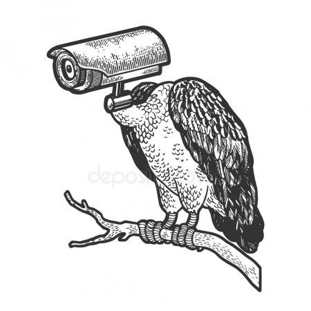
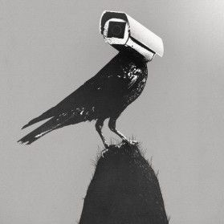
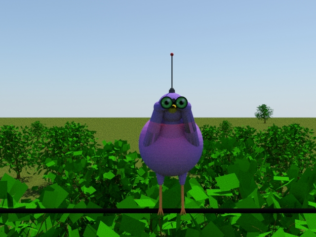

<!DOCTYPE html>
	<head>
		<title> SpyBird!</title>
		<link rel="stylesheet" type = "text/css" href="styleSheet.css">
		<style type= 'text/css’>  article{margin-top: 20%;}</style>
	</head>
	<body>
		<header>
				
				<h1> &nbsp; BirdSpy </h1>
		</header>
		
		<nav>
			<br>
			<a href="index.html">Home</a></li>
			<a class="current" href="Services.html">Services</a></li>
			<a href="contact.html">Contact us!</a></li>
			<br>
			<br>
		</nav>

		<article>
			<aside class="main">
				<p>
					<figure>
						
						<figcaption>Photo from https://i.pinimg.com/474x/ff/5e/99/ff5e99509ff7f2f4d8f64c83caf41e79.jpg</figcaption>
					</figure>
				</p>
			</aside>

			<aside class="main2">
				<p>
					<figure>
						
						<figcaption>Photo from https://i.pinimg.com/originals/97/de/cc/97decc78acc048ffb993ca48251b5955.jpg</figcaption>
					</figure>
				</p>
			</aside>
			<br>
			<br>
			<br>
			<br>
			<p>
			<h3 class="subtitle">Bird Spy offers a one-product solution for any of you surveillance needs.</h3>
			</p>
			<br>
			<br>
			<br>
		</article>
		<article>
			<p>
				The BirdSpy is a high-tech drone with integrated camera. It can blend in to the local environment and gather information, as well as keep watch over your house. Information can easily be accessed from our convenient app and is automatically uploaded as it is gathered. The drone controls are also accessed through the app.</p>
Our current model specifications are below:
			</p>
			<ul>
				<li>8 week battery life</li>
				<li>3 mile flight range</li>
				<li>audio recording, up to 50 feet away</li>
				<li>flight speed equal to the average crow</li>
				<li>$195 per drone (2 for $350)</li>
			</ul>
			<p>
				If you are tired of feeling the beady little eyes of your neighborhood birds on you, our product is perfect for you. You can finally find out what information they have been gathering all this time. As an added bonus, you can also safeguard your house, and neighborhood with this versatile and necessary product.
			</p>
			<figure class = "art">
			
		</figure>
		<p>
			The exact specifications of our product are proprietary, and out of an abundance of caution, they are not shared publicly. However, an artists interpretation of our current model can be seen above.
		</p>
		<br>
		<p>
			<h2>Order your BirdSpy now by email, phone, or in store!<h2>
		</p>
	</article>

	<footer>
		<br>
			*NOTE: This is a class project and not a real business. Sorry for the inconvenience.*
		<br>
	</footer>
	</body>
</html>
	
